Unit 03 · Transformer accounting and speculative inference
Lesson 03: Transformer accounting and speculative inference
Unit: cs229s-U03. Concepts: cs229s-U03-C01 to C12. Date: 2026-10-06. Baseline: October 6, 2026. Claim class for every leaf: PLANNED / SOURCE ATTRIBUTION PENDING. Family anchor: CALENDAR-ANCHORED, Week 2, Oct 04, “Analyzing the Performance of Transformers” (presented by Azalia): Measuring the FLOPs of MLP and Transformer Training and Inference, Reviewing Autoregressive Generation and KV Caching, Measuring the Efficiency of KV Caching (FLOPs, Arithmetic Intensity), Speculative Decoding.
How to read this lesson
Same 15-item contract as U01, in compact form. Shared
symbols follow notation_and_shapes.md. Speculative
decoding follows Leviathan et al. and Chen et al. (2023),
taught from the papers, not as lecture content.
C01: training FLOPs
Source, scope, objectives, dependencies
Calendar anchor: Week 2, Oct 04, “Measuring the FLOPs of MLP and Transformer Training and Inference”. Scope: the full training FLOP count. Objective: write C = 6PD plus the attention term. Depends on U01 C04.
Motivating question and tiny toy
Question: how many FLOPs does one training step cost? Toy: P = 1664 (U01 toy), D = 31 tokens, L = 2, n = 8, T = 4.
Mental model
A restaurant bill. The 6PD term is the food: every parameter touches every token three times (forward once, backward twice). The attention term is the tip: it grows with the square of the party size (T^2) and gets big at long tables.
Objects, shapes, assumptions
- C_dense = 6 P D.
- C_attn per sequence per layer: forward 4T^2n, backward 8T^2n (recompute of scores), total 12T^2n.
- C = 6PD + 12 L n T D (D tokens in sequences of length T).
- Assumption: dense, no sparsity, no checkpointing.
Derivation
Per token per layer forward: 24n^2 + 4Tn (U01 C09). Backward: double the dense part (48n^2) plus the attention backward. Sum over L layers and D tokens: dense gives 6PD (since P ~ 12Ln^2), attention gives 12 L n T D.
Computed example
Toy: P = 1664, D = 31. 6PD = 309504. Attention: 1228431 = 23808. Total 333312. Real scale: P = 7e9, D = 1e12, L = 32, n = 4096, T = 2048. 6PD = 4.2e22. Attention: 1232409620481e12 = 3.2e21. Total ~4.5e22. Attention is ~7 percent here.
Implementation and checks
def train_flops(P, D, L, n, T):
return 6 * P * D + 12 * L * n * T * D
assert train_flops(1664, 31, 2, 8, 4) == 333312
C = train_flops(7e9, 1e12, 32, 4096, 2048)
assert 4.4e22 < C < 4.6e22
Check: at T=0 the formula reduces to 6PD. Lab-03 verifies the split.
Complexity and costs
The 6PD term dominates at standard T. Past T ~ 6n the attention term matters (U01 C09). Budget both before long-context training.
Nearest alternative and selection boundary
Nearest alternative: count with a profiler. Selection boundary: the formula for planning, the profiler for the bill. Use the formula when the run does not exist.
Failure case and counterexample
Broken assumption: “6PD is the whole story.” At T = 32768, n = 4096: attention term = 1232409632768D vs 6PD = 612324096^2D. Ratio: (1232768) / (724096) = 1.33. Attention exceeds dense. The 6PD rule alone undercounts by 2.3x.
Research reading and falsifiable extension
Reading: the Oct 04 measurement session, scaling-law literature (U06). Falsifiable extension: fit measured step time versus T for a fixed model. Hypothesis: the fit needs both terms, 6PD alone underfits past T~8K. Report both coefficients.
Exercises
- E01 (recall): write the full training FLOP formula.
- E02 (numerical): toy values above. Recompute by hand.
- E03 (failure diagnosis): estimate said 4.2e22, profiler says 5.1e22 at T = 16384. Explain.
- E04 (counterfactual): T = 512. Attention share?
- E05 (research): state the two-term fit hypothesis.
Visual units
- Figure
u03_c01_flops.png: stacked bars (dense vs attention) at T = 2048 and T = 32768. Source: original toy. Shell 6 (change T).
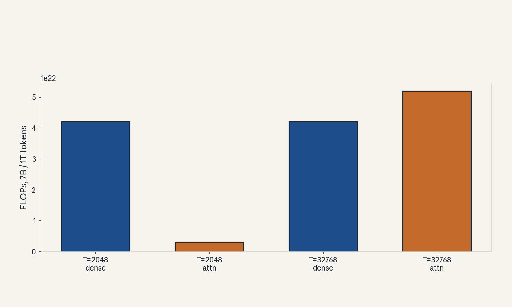
- Audit:
u03c01tof01. Before: 6PD only. After: two terms. One rule: add the quadratic term.
C02: decode FLOPs
Source, scope, objectives, dependencies
Calendar anchor: Week 2, Oct 04 (training and inference FLOP session). Scope: per-token decode cost. Objective: derive 2P per token and the attention add-on. Depends on U01 C07.
Motivating question and tiny toy
Question: generating 100 tokens costs how many FLOPs? Toy: P = 1664, L = 2, n = 8, cache length 5.
Mental model
A taxi meter. Each token is one trip past all the weights: 2P FLOPs, no backward pass. The KV cache is the regular customer discount: no recompute, just the read.
Objects, shapes, assumptions
- Per token: 2P FLOPs for the weights (one multiply-add per parameter).
- Attention per step: 4Tn FLOPs per layer (scores over cached keys), small next to 24n^2.
- Assumption: batch 1, KV cache in use.
Derivation
One decode step runs the forward pass on one token: 2P. The attention scores touch T cached keys per head: 2Tn per matmul, two matmuls, per layer: 4Tn per layer per step. Total per token: 2P + 4LTn.
Computed example
Toy: 21664 = 3328 + 4258 = 320, total 3648 FLOPs per token. 100 tokens: 364800. Real scale: P = 7e9: 2P = 1.4e10 per token. 100 tokens: 1.4e12 FLOPs. At 1e14 FLOP/s that is 14 ms of compute, but decode is bandwidth-bound, so time is set by bytes (C05).
Implementation and checks
def decode_flops(P, L, n, T, n_tokens):
return n_tokens * (2 * P + 4 * L * T * n)
assert decode_flops(1664, 2, 8, 5, 100) == 364800
Check: the 4LTn term is under 10 percent of 2P at standard shapes. Lab-03 asserts the ratio.
Complexity and costs
Decode FLOPs are tiny next to the training cost. The cost that matters is latency per token, set by memory traffic, not FLOPs.
Nearest alternative and selection boundary
Nearest alternative: count decode as small-batch training. Selection boundary: never do this, the bandwidth analysis (C05) is the right tool.
Failure case and counterexample
Broken assumption: “fewer FLOPs means faster.” A quantized model with the same FLOPs but 4x fewer bytes decodes ~4x faster at batch 1. Counterexample: int8 weights, same 2P FLOPs, 4x less traffic. Count bytes.
Research reading and falsifiable extension
Reading: the Oct 04 session. Falsifiable extension: measure per-token time vs per-token FLOPs across model sizes at batch 1. Hypothesis: time tracks bytes (P), not FLOPs, the FLOP/time correlation is weak. Report R^2 for both.
Exercises
- E06 (recall): write the per-token decode FLOP formula.
- E07 (numerical): P = 13e9, 50 tokens. Decode FLOPs.
- E08 (failure diagnosis): two models, same FLOPs, 3x different speed. Explain.
- E09 (counterfactual): batch 64. Does 2P per token still hold?
- E10 (research): state the bytes-vs-FLOPs hypothesis.
Visual units
- Figure
u03_c02_decode.png: bar of 2P versus the small attention add-on, toy and real scale. Source: original toy. Shell 2.
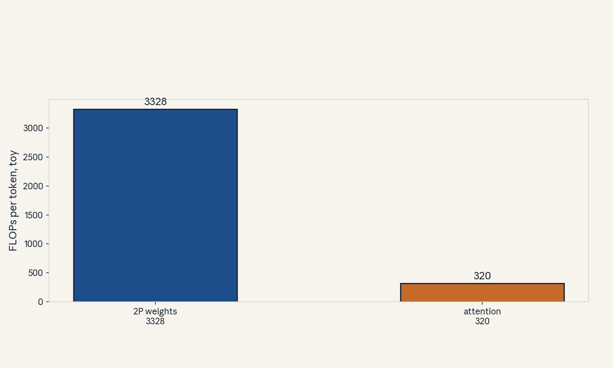
- Audit:
u03c02tof02. Before: training pass. After: decode step. One rule: drop the backward.
C03: KV-cache memory
Source, scope, objectives, dependencies
Calendar anchor: Week 2, Oct 04, “Reviewing Autoregressive Generation and KV Caching” and “Measuring the Efficiency of KV Caching”. Scope: exact cache accounting. Objective: compute bytes for any (B, T, L, n). Depends on U01 C07.
Motivating question and tiny toy
Question: the weights fit, but serving OOMs at long context. What is the biggest tensor? Toy: B = 1, T = 5, L = 2, n = 8, fp16.
Mental model
A coat check. Each token checks in two coats (its key and its value) at every floor (layer). The ticket count grows with guests times floors. The coats are small, but thousands of guests on 32 floors fill the room.
Objects, shapes, assumptions
- Per token per layer: 2n numbers (key + value).
- Total: 2 * B * T * L * n numbers. fp16: x2 bytes.
- Assumption: one cache per sequence, shared prefixes (prefix caching) are an optimization, not the base.
Derivation
Keys: (B, h, T, d) = BTn numbers per layer. Values: same. Total 2BTn per layer, 2BTLn overall. Bytes = 4BTLn in fp16.
Computed example
Toy: 21528 = 160 numbers, 320 bytes fp16. Real: B = 8, T = 8192, L = 32, n = 4096: 288192324096 = 1.7e13 numbers, 34 GB fp16. This exceeds many single-GPU HBM sizes: the cache, not the weights, caps the batch.
Implementation and checks
def kv_bytes(B, T, L, n, bpe=2):
return 2 * B * T * L * n * bpe
assert kv_bytes(1, 5, 2, 8) == 320
assert kv_bytes(8, 8192, 32, 4096) / 2**30 > 30
Check: linear in each of B, T, L, n. Lab-03 checks all four ratios.
Complexity and costs
O(BTLn) memory. The serving budget must include it before choosing batch size and context length.
Nearest alternative and selection boundary
Nearest alternative: paged/blocked KV cache (finer allocation). Selection boundary: the formula sizes the budget, paged attention reduces fragmentation waste on top.
Failure case and counterexample
Broken assumption: “the cache is small.” At B=8, T=8192 it is 34 GB, bigger than the 14 GB weights. Counterexample: a serving config that fits weights but OOMs on the first long request. Size the cache first.
Research reading and falsifiable extension
Reading: the Oct 04 KV efficiency session. Falsifiable extension: measure max batch vs T on one GPU. Hypothesis: max batch falls as 1/T with slope set by 4BLn bytes. Fit and report.
Exercises
- E11 (recall): write the KV byte formula.
- E12 (numerical): B = 1, T = 32768, L = 32, n = 4096, fp16. GiB.
- E13 (failure diagnosis): OOM on long requests only. Name the term and two fixes.
- E14 (counterfactual): GQA with 8 KV heads, 32 query heads. New formula?
- E15 (research): state the 1/T hypothesis.
Visual units
- Figure
u03_c03_kvcache.png: stacked bars of weights vs cache at (B=1, T=2048) and (B=8, T=8192). Source: original toy. Shell 6.
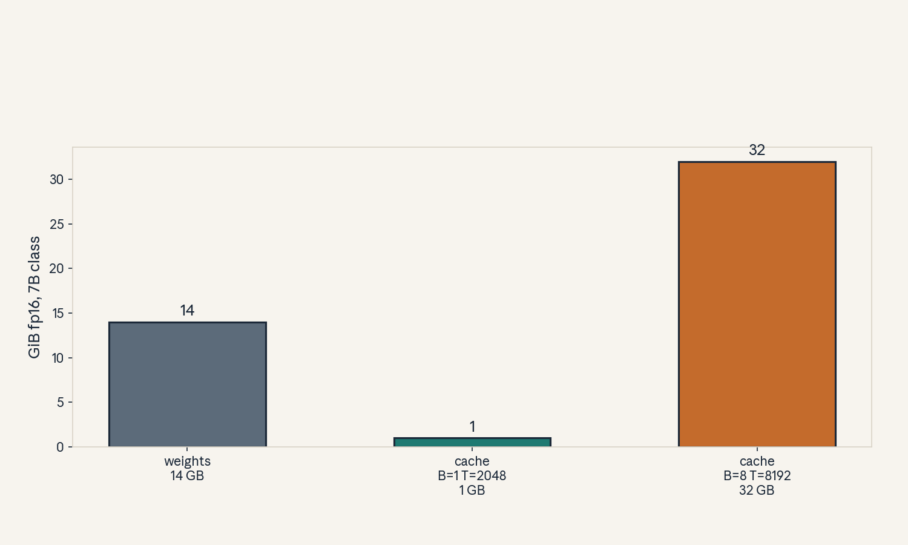
- Audit:
u03c03tof03. Before: weights only. After: weights plus cache. One rule: count coats.
C04: prefill
Source, scope, objectives, dependencies
Calendar anchor: Week 2, Oct 04 (autoregressive generation review). Scope: the prompt-processing phase. Objective: contrast prefill with decode. Depends on U01 C07, C08.
Motivating question and tiny toy
Question: the first token takes 200 ms, the rest take 20 ms each. Why? Toy: prompt T = 4, n = 8.
Mental model
Reading the brief before the meeting. Prefill reads all prompt tokens at once (parallel, like training). Decode then speaks one token at a time. The brief is long, the speaking is slow.
Objects, shapes, assumptions
- Prefill: forward pass on (B, T, n), cost ~2P*T FLOPs, compute-bound at long T.
- Builds the KV cache for all prompt tokens.
- Assumption: prompt fits in memory with scores (else chunk the prefill).
Derivation
Prefill FLOPs = T * (24Ln^2 + 4LTn): the full training-forward cost on the prompt. At T = 2048, n = 4096: dominated by 24Ln^2T, compute-bound, high intensity (weights reused T times).
Computed example
Toy: T = 4, P = 1664: prefill ~216644 = 13312 FLOPs plus attention. Real: P = 7e9, T = 2048: 27e92048 = 2.9e13 FLOPs. At 1e14 FLOP/s: ~0.3 s compute-bound. Then decode at ~7 ms/token.
Implementation and checks
def prefill_flops(P, L, n, T):
return T * (2 * P + 4 * L * T * n)
assert prefill_flops(1664, 2, 8, 4) == 4 * (3328 + 1280)
Check: prefill of T=1 equals one decode step. Lab-03 asserts this identity.
Complexity and costs
Prefill is O(T) compute-bound work. Time to first token is dominated by prefill at long prompts.
Nearest alternative and selection boundary
Nearest alternative: chunked prefill (split the prompt into pieces). Selection boundary: chunk when the prompt’s score matrix exceeds memory, else one pass.
Failure case and counterexample
Broken assumption: “prefill is always fast.” A 128K prompt prefill can take minutes and OOM on scores. Counterexample: naive (128K)^2 scores = 32 GB per head-set. Chunk or tile.
Research reading and falsifiable extension
Reading: the Oct 04 session. Falsifiable extension: measure time-to-first-token vs prompt length. Hypothesis: quadratic at long T with naive attention, linear with tiled attention. Report the bend point.
Exercises
- E16 (recall): define prefill in one line.
- E17 (numerical): P = 7e9, T = 8192. Prefill FLOPs (dense term only).
- E18 (failure diagnosis): first token takes 10 s at T = 65536. Name the term.
- E19 (counterfactual): prefill chunked into 4. Peak score memory now?
- E20 (research): state the bend-point hypothesis.
Visual units
- Figure
u03_c04_prefill.png: timeline with a long prefill block then small decode ticks. Source: original toy. Shell 1.
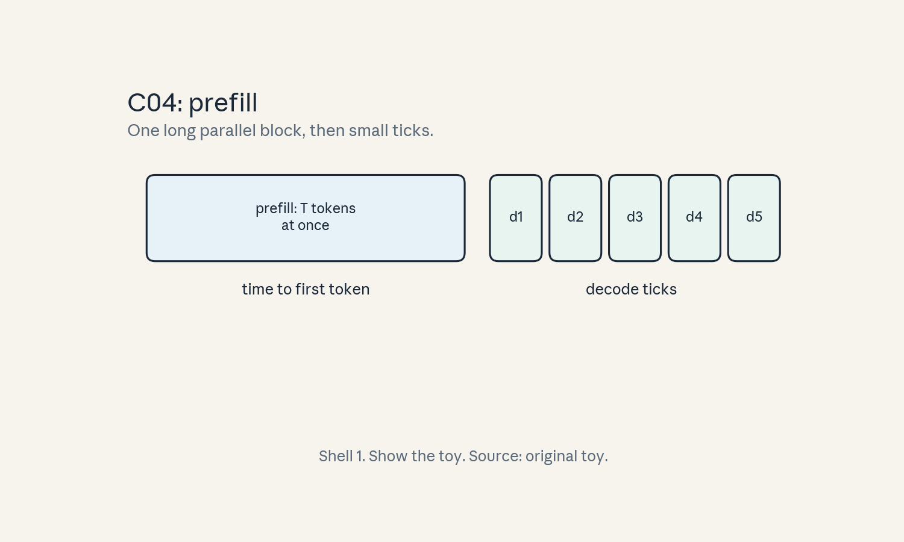
- Audit:
u03c04tof04. Before: empty cache. After: full prompt cache. One rule: process in parallel.
C05: arithmetic intensity (inference)
Source, scope, objectives, dependencies
Calendar anchor: Week 2, Oct 04, “Measuring the Efficiency of KV Caching (FLOPs, Arithmetic Intensity)”. Scope: intensity of prefill vs decode. Objective: place both on the roofline. Depends on U02 C04, C01-C04 here.
Motivating question and tiny toy
Question: prefill and decode run the same weights. Why is one compute-bound and the other bandwidth-bound? Toy: P = 1664, T = 4.
Mental model
A lecture versus tutoring. Prefill lectures to T students at once: each weight is reused T times (high intensity). Decode tutors one student: each weight is used once (intensity ~1).
Objects, shapes, assumptions
- Prefill intensity: ~T FLOP/byte (weights reused across T tokens), fp16.
- Decode intensity: ~1 FLOP/byte at batch 1.
- Assumption: dense weights, fp16.
Derivation
Prefill: FLOPs 2PT, bytes 2P (weights) + cache writes. I ~ T. Decode: FLOPs 2P, bytes 2P + cache read 4LTn. I ~ 1 at batch 1. Batch B multiplies decode intensity by B (C06).
Computed example
Toy ridge 150 (U02). Prefill T = 4: I ~ 4, memory-bound still (small toy). Real: prefill T = 2048: I ~ 2048 > 150, compute-bound. Decode batch 1: I ~ 1, memory-bound, ceiling 2e12 FLOP/s.
Implementation and checks
def infer_intensity(phase, T=1, B=1):
if phase == "prefill":
return T
return B # decode, fp16 matvec-like
assert infer_intensity("prefill", T=2048) == 2048
assert infer_intensity("decode", B=1) == 1
Check: decode intensity scales with B. Lab-03 sweeps B and plots the roofline crossing.
Complexity and costs
The prefill/decode split is the serving design axis: optimize prefill for compute, decode for bandwidth.
Nearest alternative and selection boundary
Nearest alternative: treat the whole request as one phase. Selection boundary: split whenever prompts are long, the two phases need different optimizations.
Failure case and counterexample
Broken assumption: “decode is always bandwidth-bound.” At batch 512, I ~ 512 > 150: compute-bound. Counterexample: large-batch serving where adding bandwidth does nothing. Check B first.
Research reading and falsifiable extension
Reading: the Oct 04 KV efficiency session. Falsifiable extension: sweep batch for decode, plot tokens/s. Hypothesis: linear rise (bandwidth-bound) then flat (compute-bound), the knee sits near B = ridge. Report the knee.
Exercises
- E21 (recall): write both intensities.
- E22 (numerical): toy ridge 150. Classify prefill T = 64 and decode B = 200.
- E23 (failure diagnosis): decode got no faster with 2x bandwidth. Explain.
- E24 (counterfactual): weights in int8. Decode intensity now?
- E25 (research): state the knee hypothesis.
Visual units
- Figure
u03_c05_intensity.png: roofline with prefill (right, compute-bound) and decode (left, bandwidth-bound) points. Source: original toy. Shell 3.
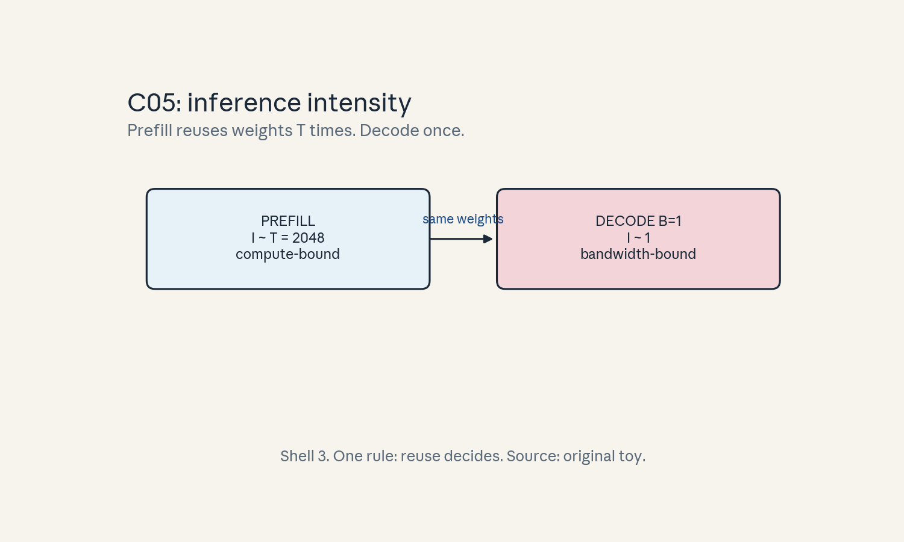
- Audit:
u03c05tof05. Before: one phase. After: two points. One rule: reuse decides.
C06: batching
Source, scope, objectives, dependencies
Calendar anchor: Week 2, Oct 04 (efficiency family). Scope: batching for inference. Objective: derive the throughput/latency tradeoff. Depends on C05.
Motivating question and tiny toy
Question: batch 8 serves 8x the users. Does each user wait longer? Toy: decode 20 ms/token at batch 1.
Mental model
A bus versus a taxi. The bus (batch) carries many at lower cost each, but everyone waits for boarding (latency). The taxi (batch 1) leaves now. Serving chooses the vehicle per the SLA.
Objects, shapes, assumptions
- Throughput: tokens/s across the batch.
- Latency: seconds per token for one request.
- Batching raises intensity ~B and throughput, and usually raises latency.
- Assumption: requests are independent, no SLO violation.
Derivation
Decode at batch B: weights read once, used B times. Traffic per token across batch: 2P + B*cache-read. Per-request latency grows with B (scheduling, cache size), throughput grows sublinearly then flattens at the compute roof.
Computed example
Toy: batch 1: 50 tok/s, 20 ms/token. Batch 8: 296 tok/s total, 37 tok/s per request, 27 ms/token. Throughput up 5.9x, latency up 1.35x. Lab-03 models this curve.
Implementation and checks
def batch_model(B, t1=0.020):
# toy: latency grows slowly, throughput sublinear
lat = t1 * (1 + 0.05 * (B - 1))
thr = B / lat
return lat, thr
l1, t1 = batch_model(1)
l8, t8 = batch_model(8)
assert t8 > 6 * t1 and l8 < 1.5 * l1
Check: throughput monotonic in B in the toy, latency monotonic too. Real curves flatten (lab notes this).
Complexity and costs
Batching is the cheapest throughput lever. Its cost is latency and KV-cache memory (C03 caps B).
Nearest alternative and selection boundary
Nearest alternative: continuous batching (U08, second builder). Selection boundary: static batching when requests are uniform, continuous when lengths vary.
Failure case and counterexample
Broken assumption: “batching always helps.” Past the compute roof, batching adds latency with no throughput gain. Counterexample: batch 1024 at the roof: same tokens/s as 512, double the wait. Find the knee (C05).
Research reading and falsifiable extension
Reading: the Oct 04 session. Falsifiable extension: sweep batch, plot throughput and p99 latency. Hypothesis: throughput saturates, latency keeps rising, the optimal B sits at the saturation knee. Report both curves.
Exercises
- E26 (recall): define the batching tradeoff in one line.
- E27 (numerical): batch 1: 20 ms/token. Batch 16 with the toy model. Latency and total throughput.
- E28 (failure diagnosis): batch 32, throughput flat vs batch 16, latency doubled. Diagnose.
- E29 (counterfactual): SLO caps latency at 25 ms. Max batch in the toy model?
- E30 (research): state the saturation hypothesis.
Visual units
- Figure
u03_c06_batch.png: throughput (rising, saturating) and latency (rising) vs B, toy. Source: original toy. Shell 6.
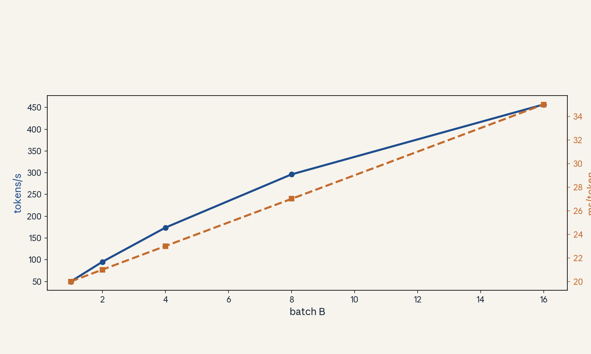
- Audit:
u03c06tof06. Before: B=1. After: B=8. One rule: share the weight read.
C07: draft model
Source, scope, objectives, dependencies
Calendar anchor: Week 2, Oct 04, “Speculative Decoding”. Scope: the draft-then-verify idea. Objective: describe the draft model’s role. Depends on U01 C07.
Motivating question and tiny toy
Question: the big model is slow but smart. Can a small fast model do the typing while the big one only proofreads? Toy: draft 68M, target 7B (size labels only, Not in source as a benchmark claim).
Mental model
An intern and an editor. The intern (draft) types gamma words fast. The editor (target) reads all gamma at once and keeps the good ones. The editor’s reading is parallel, so checking 5 words costs little more than checking 1.
Objects, shapes, assumptions
- Draft q: small model, cost ratio c = t_draft / t_target per token (c << 1).
- Draft length gamma: tokens proposed per round.
- Target p: verifies gamma tokens in one parallel pass (one prefill-like step over gamma tokens).
- Assumption: draft and target share the tokenizer.
Derivation
One round: draft runs gamma steps (cost gammac in target units), target runs one verification pass (cost ~1). Tokens accepted: E[k] ~ (1-a^{gamma+1}) / (1-a) for acceptance rate a. Wall-clock per token ~ (gammac + 1) / E[k] target-steps.
Computed example
Toy: c = 0.05, gamma = 5, a = 0.8. E[k] = (1-0.8^6)/0.2 = (1-0.262)/0.2 = 3.69. Cost per round: 5*0.05 + 1 = 1.25. Per token: 1.25/3.69 = 0.34 target-steps. Speedup ~2.9x. Lab-03 recomputes this.
Implementation and checks
def expected_accepted(a, gamma):
return (1 - a**(gamma + 1)) / (1 - a)
def speedup(a, gamma, c):
return expected_accepted(a, gamma) / (gamma * c + 1)
assert abs(expected_accepted(0.8, 5) - 3.689) < 0.01
assert abs(speedup(0.8, 5, 0.05) - 2.95) < 0.05
Check: at a -> 1, E[k] -> gamma + 1 (the bonus token). At a = 0, E[k] = 1 (only the bonus token).
Complexity and costs
Draft cost is gamma*c, verification is ~1 target step. Net win needs a high enough and c low enough.
Nearest alternative and selection boundary
Nearest alternative: a bigger batch (throughput) or a smaller model (quality loss). Selection boundary: speculative decoding when latency matters and quality must not drop (exactness, C10).
Failure case and counterexample
Broken assumption: “any draft helps.” A slow draft (c ~ 0.5) or low acceptance (a ~ 0.3) loses to plain decode. Counterexample: c = 0.5, gamma = 5, a = 0.3: E[k] = 1.42, cost 3.5, per token 2.46x slower than baseline. Measure a and c first.
Research reading and falsifiable extension
Reading: Leviathan et al., Chen et al. (2023). Falsifiable extension: sweep gamma at fixed (a, c) on a real pair. Hypothesis: speedup rises then falls, the optimal gamma matches the formula’s argmax. Report both.
Exercises
- E31 (recall): define c, gamma, a in one line each.
- E32 (numerical): c = 0.05, gamma = 5, a = 0.8. E[k] and speedup.
- E33 (failure diagnosis): speedup < 1. Name two causes with the numbers to check.
- E34 (counterfactual): draft is free (c = 0). Speedup formula now?
- E35 (research): state the optimal-gamma hypothesis.
Visual units
- Figure
u03_c07_draft.png: intern/editor cartoon as blocks: draft emits 5 tokens, target checks once. Source: original toy. Shell 1.
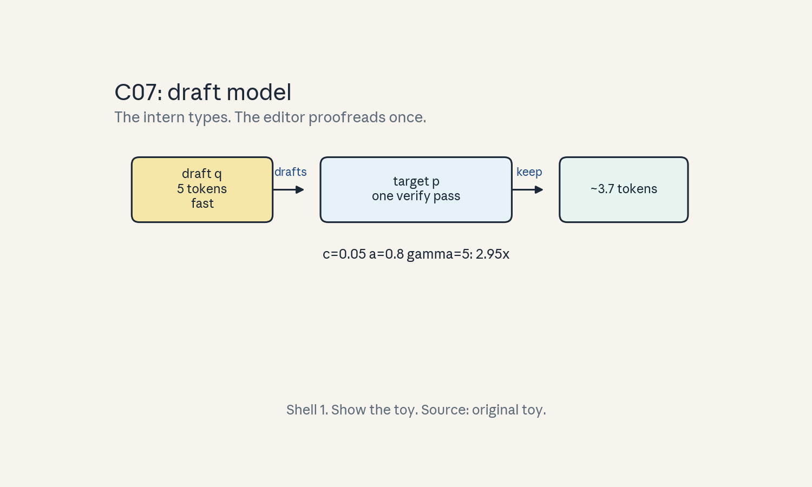
- Audit:
u03c07tof07. Before: 1 token per target step. After: ~3.7 per round. One rule: draft, then verify.
C08: verification
Source, scope, objectives, dependencies
Calendar anchor: Week 2, Oct 04, “Speculative Decoding”. Scope: the parallel verification pass. Objective: explain why verification costs ~1 step. Depends on C07.
Motivating question and tiny toy
Question: checking 5 tokens sounds like 5 steps. Why is it 1? Toy: gamma = 5, prompt cached.
Mental model
Grading a quiz versus taking it. Taking is serial (one answer at a time). Grading is parallel (all answers on the desk at once). The target grades the gamma drafts in one forward pass because the drafts are known tokens, like a prefill.
Objects, shapes, assumptions
- Verification input: (B, gamma, n) tokens.
- One forward pass gives p(x_i | prefix, drafts_<i) for all i.
- Cost ~1 target step (compute-bound like prefill).
- Assumption: the KV cache holds the prefix, drafts append like a mini-prefill.
Derivation
Draft tokens are fixed, so the target computes all gamma+1 distributions (including the bonus position) in parallel: FLOPs ~ gamma * 2P, but intensity ~gamma makes it compute-bound, so wall-clock ~1 step, not gamma steps.
Computed example
Toy: gamma = 5. Verification FLOPs = 5 * 2P, but at intensity ~5 the time is ~1.2 target steps, not 5. The lab models time as 1 + 0.05*gamma.
Implementation and checks
def verify_steps(gamma, slope=0.05):
return 1 + slope * gamma
assert abs(verify_steps(5) - 1.25) < 1e-9
Check: verify(0) = 1 (plain decode step). The lab uses this in the speedup formula.
Complexity and costs
Verification is O(gamma) FLOPs but O(1) steps. The step count is what latency cares about.
Nearest alternative and selection boundary
Nearest alternative: verify serially (defeats the purpose). Selection boundary: parallel verification always, the question is only gamma.
Failure case and counterexample
Broken assumption: “verification is exactly 1 step.” At large gamma the pass becomes compute-heavy and exceeds 1 step. Counterexample: gamma = 50 at long context: the verification pass itself is slow. Model it as 1 + slope*gamma.
Research reading and falsifiable extension
Reading: the 2023 papers’ cost analysis. Falsifiable extension: time verification passes for gamma in 1..32. Hypothesis: linear with small slope, the slope sets the optimal gamma. Report the slope.
Exercises
- E36 (recall): why is verification one step, not gamma?
- E37 (numerical): gamma = 8, slope 0.05. Verification steps.
- E38 (failure diagnosis): verification takes 4 steps at gamma = 5. Name the cause.
- E39 (counterfactual): cache missing for drafts. What changes?
- E40 (research): state the slope hypothesis.
Visual units
- Figure
u03_c08_verify.png: 5 draft tokens enter one target block, 6 distributions exit. Source: original toy. Shell 3.
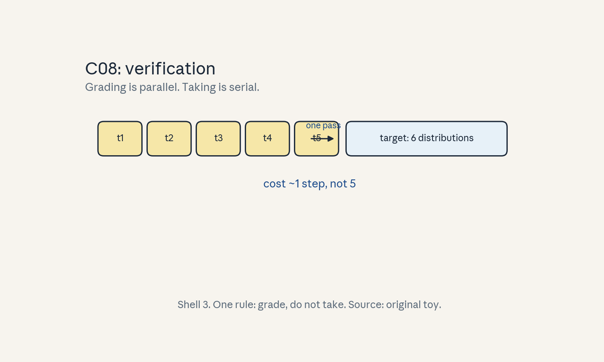
- Audit:
u03c08tof08. Before: serial steps. After: one parallel pass. One rule: grade, do not take.
C09: rejection/correction
Source, scope, objectives, dependencies
Calendar anchor: Week 2, Oct 04, “Speculative Decoding”. Scope: the acceptance rule. Objective: write the rejection-sampling rule and the resample distribution. Depends on C07, P06.
Motivating question and tiny toy
Question: the draft proposes “cat” but the target prefers “dog”. Who wins, and with what probability? Toy: q(cat) = 0.7, p(cat) = 0.2.
Mental model
A bouncer with a coin. The draft guest arrives with confidence q. The bouncer (target) admits them with probability min(1, p/q). Rejected guests are replaced by a draw from the leftover distribution (p - q clipped at 0, renormalized).
Objects, shapes, assumptions
- Accept x_i with prob min(1, p(x_i)/q(x_i)).
- On first rejection at i: sample x_i from norm(max(0, p - q)).
- Tokens after a rejection are discarded.
- Assumption: p and q share support (same tokenizer), where q = 0, p must be 0 for exactness.
Derivation
This is standard rejection sampling: accepted tokens follow p exactly. Proof sketch: P(accept x) = q(x) min(1, p(x)/q(x)) = min(q(x), p(x)). The residual mass p(x) - min(q(x),p(x)) = max(0, p(x) - q(x)) is covered by the resample. Total: p(x).
Computed example
Toy: q(cat) = 0.7, p(cat) = 0.2. Accept prob = 0.2/0.7 = 0.286. On reject, resample from the positive part of (p - q). Lab-03 simulates this and checks the output histogram matches p.
Implementation and checks
import numpy as np
rng = np.random.default_rng(2)
def spec_step(p, q, drafts):
out = []
for x in drafts:
if rng.random() < min(1.0, p[x] / q[x]):
out.append(x)
else:
resid = np.maximum(0.0, p - q)
resid = resid / resid.sum()
out.append(int(rng.choice(len(p), p=resid)))
break
else:
# all accepted: bonus token from p conditioned
# on full draft (toy: draw from p)
out.append(int(rng.choice(len(p), p=p)))
return out
Check: over many runs the token histogram matches p (lab asserts chi-square-ish closeness on a toy).
Complexity and costs
The sampling math is O(V) per position for the residual, negligible next to model FLOPs.
Nearest alternative and selection boundary
Nearest alternative: greedy accept (draft token or nothing). Selection boundary: greedy is fine when only the argmax matters, sampling when the full distribution must be preserved.
Failure case and counterexample
Broken assumption: “rejection is rare.” With a weak draft, most tokens reject and each round yields ~1 token at cost gamma*c + 1: slower than baseline. Counterexample: C07 numbers (a = 0.3, c = 0.5). Watch the acceptance rate live.
Research reading and falsifiable extension
Reading: the 2023 papers’ exactness proofs. Falsifiable extension: histogram test on a toy (p, q): run 50K rounds, compare output distribution to p. Hypothesis: matches within sampling noise. Report the max deviation.
Exercises
- E41 (recall): write the accept probability.
- E42 (numerical): q = 0.7, p = 0.2. Accept prob.
- E43 (failure diagnosis): output distribution drifts from p. Name the bug class.
- E44 (counterfactual): q = p exactly. What is a?
- E45 (research): state the histogram hypothesis.
Visual units
- Figure
u03_c09_reject.png: bouncer diagram: draft token in, coin flip, accept or resample out. Source: original toy. Shell 3.
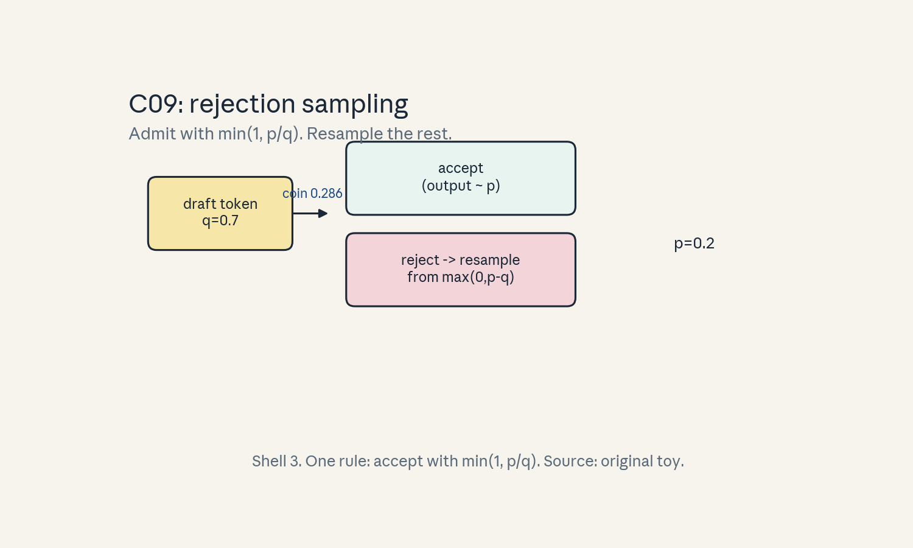
- Audit:
u03c09tof09. Before: draft token. After: target-distributed token. One rule: accept with min(1, p/q).
C10: exactness assumptions
Source, scope, objectives, dependencies
Calendar anchor: Week 2, Oct 04, “Speculative Decoding”. Scope: when the output distribution is exactly preserved. Objective: state the two assumptions. Depends on C09.
Motivating question and tiny toy
Question: is speculative decoding “almost the same” or “exactly the same” as the target? Toy: any (p, q).
Mental model
A photocopy, not a sketch. Rejection sampling is a mathematical identity: the output tokens follow p exactly, not approximately. The assumptions are the fine print on the copier: same tokenizer, and the resample math done right.
Objects, shapes, assumptions
- A1: draft and target share the vocabulary and tokenization (support match).
- A2: the resample distribution is norm(max(0, p-q)), computed exactly.
- Then: output distribution = p, exactly.
Derivation
From C09: accepted mass per token = min(q, p), resample mass = max(0, p - q), sum = p. The bonus token after full acceptance comes from p directly. Every emitted token is p-distributed. No approximation anywhere.
Computed example
Toy: p = [0.2, 0.8], q = [0.7, 0.3]. Accept token 0 with prob 0.2/0.7. The math in C09 gives total prob of emitting 0 = 0.2 = p(0). Lab-03 verifies numerically.
Implementation and checks
Same spec_step as C09. Check: with q = p, every
draft accepts (a = 1) and the output is trivially p.
Complexity and costs
Exactness is free: the same sampling code that is approximate-looking is exactly right. The cost is understanding, not compute.
Nearest alternative and selection boundary
Nearest alternative: approximate methods (early exit, draft-only). Selection boundary: speculative decoding when quality must be bit-identical to the target, approximate methods when some drift is acceptable.
Failure case and counterexample
Broken assumption: different tokenizers. If the draft tokenizes “cat” as one token and the target as two, the distributions are over different spaces and the proof breaks. Counterexample: mismatched vocabs give garbage or crashes. Same tokenizer is mandatory.
Research reading and falsifiable extension
Reading: the 2023 papers’ theorems. Falsifiable extension: swap in a draft with a different tokenizer and watch exactness fail. Hypothesis: output diverges from p measurably. (Do this on toys only.)
Exercises
- E46 (recall): name the two exactness assumptions.
- E47 (numerical): q = p. Acceptance rate?
- E48 (failure diagnosis): outputs look off after a tokenizer change. Explain.
- E49 (counterfactual): resample skipped on reject (just drop). Is output still p?
- E50 (research): state the tokenizer-swap hypothesis.
Visual units
- Figure
u03_c10_exact.png: identity card: “output = p, exactly” with the two assumptions as stamps. Source: original toy. Shell 7 (what breaks it).
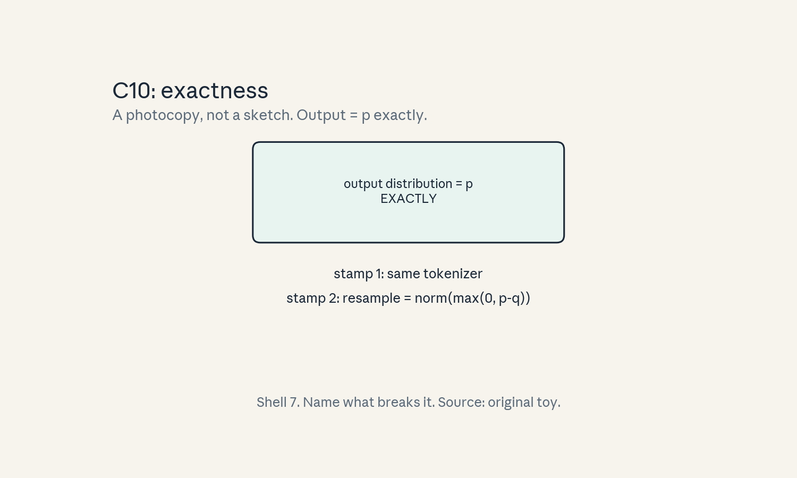
- Audit:
u03c10tof10. Before: draft q. After: target p. One rule: rejection sampling identity.
C11: acceptance rate
Source, scope, objectives, dependencies
Calendar anchor: Week 2, Oct 04, “Speculative Decoding”. Scope: the acceptance rate alpha. Objective: derive expected tokens per round. Depends on C07.
Motivating question and tiny toy
Question: the draft is right 80 percent of the time per token. How many tokens does one round yield? Toy: a = 0.8, gamma = 5.
Mental model
A free-throw streak. Each draft token is a free throw with make probability a. The round ends at the first miss, plus a bonus token. Expected makes follow the geometric series.
Objects, shapes, assumptions
- a: per-token acceptance probability (assumed constant across positions, a simplification).
- E[k] = (1 - a^{gamma+1}) / (1 - a).
- Assumption: independence across positions. Real drafts correlate, the formula is an estimate.
Derivation
P(k >= i) = a^i for i <= gamma (i drafts accepted), and the bonus token always adds 1: E[k] = sum_{i=0}^{gamma} a^i = (1 - a^{gamma+1})/(1 - a).
Computed example
Toy: a = 0.8, gamma = 5: 0.8^6 = 0.262144, so E[k] = (1 - 0.262144)/0.2 = 3.689. Realistic: a = 0.6, gamma = 4: E[k] = (1 - 0.0778)/0.4 = 2.31.
Implementation and checks
def expected_accepted(a, gamma):
return (1 - a ** (gamma + 1)) / (1 - a)
assert abs(expected_accepted(0.8, 5) - 3.68928) < 1e-5
assert abs(expected_accepted(1.0 - 1e-9, 5) - 6.0) < 1e-3
Check: limit a -> 1 gives gamma + 1. Lab-03 checks against simulation.
Complexity and costs
Higher a is the main lever: E[k] is concave in a, so gains concentrate near a = 1. Draft quality beats draft speed past a point.
Nearest alternative and selection boundary
Nearest alternative: measure E[k] empirically per round. Selection boundary: the formula for planning gamma, measurements for the real number.
Failure case and counterexample
Broken assumption: constant a. Real acceptance falls with position (later drafts condition on earlier drafts). Counterexample: measured E[k] = 2.1 vs formula 3.7. Fit a per-position a_i instead.
Research reading and falsifiable extension
Reading: the 2023 papers’ analysis. Falsifiable extension: measure per-position acceptance on a real pair. Hypothesis: a_i declines with i. Report the fitted curve.
Exercises
- E51 (recall): write the E[k] formula.
- E52 (numerical): a = 0.6, gamma = 4. E[k].
- E53 (failure diagnosis): formula says 3.7, measured 2.1. Explain.
- E54 (counterfactual): a = 1. Tokens per round?
- E55 (research): state the declining-a_i hypothesis.
Visual units
- Figure
u03_c11_accept.png: E[k] vs gamma curves for a in {0.5, 0.8, 0.95}. Source: original toy. Shell 6.
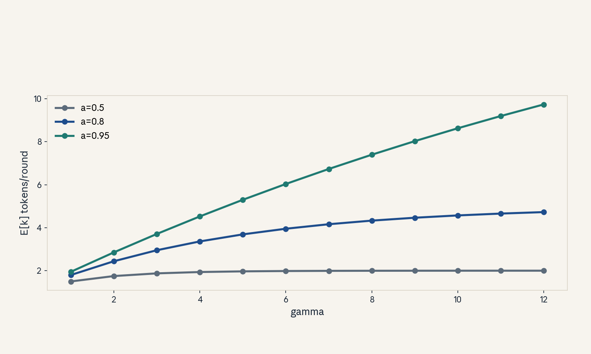
- Audit:
u03c11tof11. Before: one draft. After: expected yield. One rule: geometric sum.
C12: latency tradeoff
Source, scope, objectives, dependencies
Calendar anchor: Week 2, Oct 04, “Speculative Decoding”. Scope: when to use it. Objective: write the speedup formula and the break-even. Depends on C07-C11.
Motivating question and tiny toy
Question: draft cost 5 percent, acceptance 80 percent, gamma 5. Win or lose? Toy: c = 0.05, a = 0.8.
Mental model
A bet with known odds. You pay gammac + 1 per round and win E[k] tokens. The bet pays when (gammac + 1) < E[k]. The formula is the odds table, measure a and c before betting.
Objects, shapes, assumptions
- Speedup = E[k] / (gamma*c + 1).
- Break-even: E[k] = gamma*c + 1.
- Assumption: verification ~1 step (C08 slope small).
Derivation
Baseline: 1 token per target step. Speculative: E[k] tokens per (gammac + 1) steps. Ratio = E[k] / (gammac + 1). With a = 0.8, gamma = 5, c = 0.05: 3.689 / 1.25 = 2.95x.
Computed example
Toy above: 2.95x. Bad case: a = 0.3, c = 0.5, gamma = 5: E[k] = 1.42, cost 3.5, speedup 0.41x (a 2.4x slowdown). Lab-03 plots the speedup surface.
Implementation and checks
def speedup(a, gamma, c):
return ((1 - a ** (gamma + 1)) / (1 - a)) / (gamma * c + 1)
assert abs(speedup(0.8, 5, 0.05) - 2.95) < 0.05
assert speedup(0.3, 5, 0.5) < 1.0
Check: speedup(1, gamma, 0) = gamma + 1 (perfect draft, free). Lab-03 sweeps the surface.
Complexity and costs
The tradeoff is measured in target-steps per token. Everything else (FLOPs, memory) is secondary at batch 1.
Nearest alternative and selection boundary
Nearest alternative: batching (throughput) or quantization (bandwidth). Selection boundary: speculative decoding for latency at fixed quality, quantization when bandwidth is the bind, batching when throughput is the goal.
Failure case and counterexample
Broken assumption: “speculative always helps.” Low a or high c flips the sign. Counterexample above (0.41x). The honest workflow: measure a on your workload, then decide.
Research reading and falsifiable extension
Reading: the 2023 papers’ speedup analysis. Falsifiable extension: grid over (a, c, gamma) on a real pair, compare measured vs formula speedup. Hypothesis: formula within 20 percent, deviations from verification slope. Report the error map.
Exercises
- E56 (recall): write the speedup formula.
- E57 (numerical): a = 0.9, gamma = 7, c = 0.1. Speedup.
- E58 (failure diagnosis): measured 1.2x, formula 2.9x. Name two causes.
- E59 (counterfactual): c = 0 (free draft). Best gamma?
- E60 (research): state the error-map hypothesis.
Visual units
- Figure
u03_c12_tradeoff.png: speedup surface (heatmap) over (a, gamma) at c = 0.05, break-even contour. Source: original toy. Shell 8.
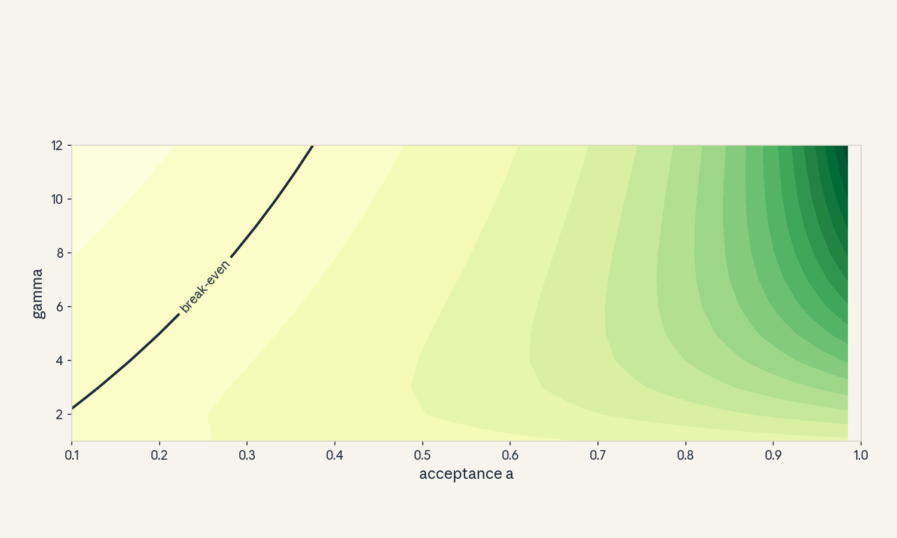
- Audit:
u03c12tof12. Before: 1 token/step. After: E[k] per round. One rule: divide by cost.
Unit chapter plate
Figure u03_chapter.png: left shows naive serving
(recompute, no batching, serial verify), center shows
the stored objects (weights, KV cache, draft model),
right shows the managed system (cached decode, batched
prefill, speculative rounds), bottom line: “Count the
bytes per token. Then buy back latency.” Numbers from
the lesson toys.
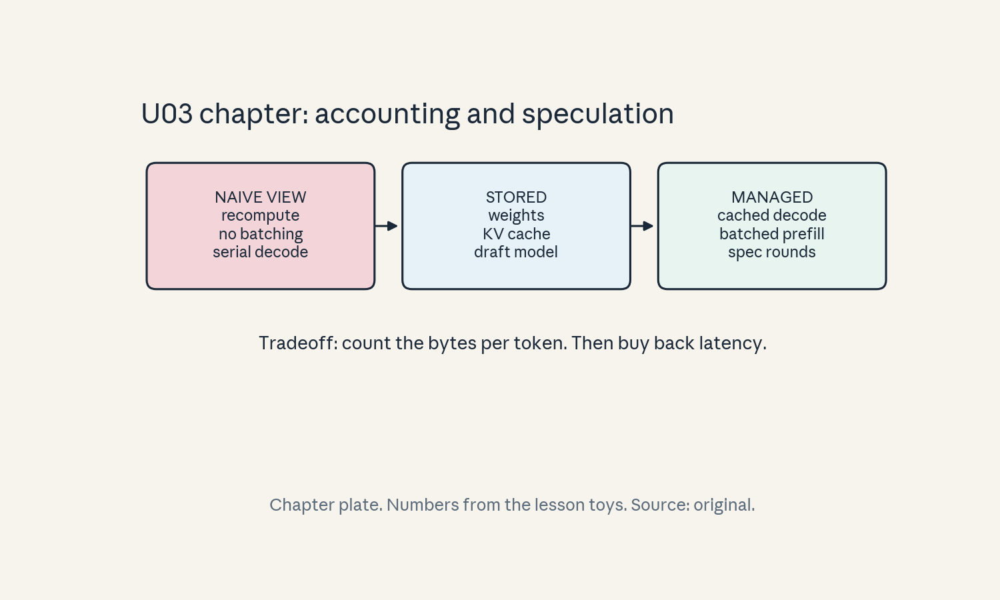
Russian-doll ladder: speculative decoding (major mechanism)
- Shell 0: question: can we emit more than one token per target step without changing the distribution? Observable: tokens per target step.
- Shell 1: toy: c = 0.05, a = 0.8, gamma = 5 (C07).
- Shell 2: objects: draft q, target p, gamma, a, c.
- Shell 3: rule: accept with min(1, p/q), resample from norm(max(0, p-q)).
- Shell 4: algorithm:
spec_stepin C09. - Shell 5: invariant: output histogram matches p, E[k] formula at a -> 1.
- Shell 6: change gamma only, predict speedup rises then falls, confirm in lab-03.
- Shell 7: break same-tokenizer: exactness fails.
- Shell 8: compare speculative vs quantization vs batching under a latency SLO.
- Shell 9: falsifiable extension in C12 (error map).
- Shell 10: production: the (a, c) measurement gates the serving decision, owners sign off on the SLO.
Role bridge
- Research engineer: the speedup formula and its break-even are the pre-flight check before any speculative serving work.
- LLM engineer: prefill/decode intensity split (C05) designs the serving stack.
- FDE: the latency tradeoff (C12) is the stakeholder answer: when the bet pays and when it does not.